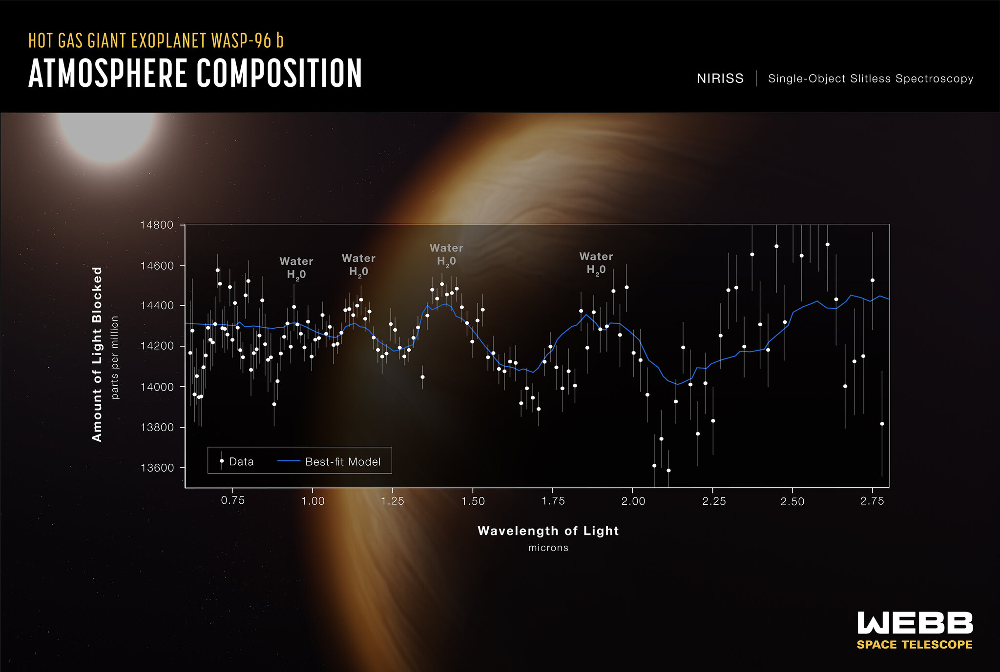

The James Webb Space Telescope (JWST) is an advanced space observatory launched on December 25, 2021, at a cost of approximately $10 billion USD.
JWST is considered the successor to the Hubble Telescope and is designed to explore the universe using infrared light, allowing it to see deeper into space and reveal details invisible to visible light.
Eight Remarkable Images Captured by JWST:
1. Webb Deep Field (SMACS 0723)
Overview: The deepest and sharpest infrared image of the universe, showing thousands of galaxies as they appeared 13.1 billion years ago.
Scientific context: A distant galaxy cluster acting as a gravitational lens, allowing observation of more distant galaxies behind it.
2. Carina Nebula (NGC 3324)
Overview: An image showing the “cosmic cliffs,” a star-forming region with complex structures.
Scientific context: One of the largest and brightest nebulae in the sky, located 7,600 light-years away, containing massive stars.
3. Stephan's Quintet
Overview: An image of a group of five galaxies, four of which are interacting gravitationally.
Scientific context: The first compact galaxy group ever discovered, located about 290 million light-years away in the constellation Pegasus.
4. Southern Ring Nebula
Overview: An image of a planetary nebula showing glowing gases surrounding a dying star.
Scientific context: A planetary nebula about 2,000 light-years away, formed by the outer layers ejected from a dying star.
5. Pillars of Creation (Eagle Nebula)
Overview: An image of dense gas and dust columns that are star-forming sites.
Scientific context: Iconic structures in the Eagle Nebula, located about 6,500 light-years away, considered a stellar nursery.

6. Planet WASP-96b
Overview: A spectroscopic analysis of an exoplanet’s atmosphere revealing water vapor.
Scientific context: A hot gas giant located 1,150 light-years away, orbiting its star every 3.4 Earth days.
7. Horsehead Nebula
Overview: An image showing intricate details of a dark nebula shaped like a horse's head.
Scientific context: A dark nebula in the Orion constellation, about 1,300 light-years away, and a known star-forming region.
8. Tarantula Nebula (30 Doradus)
Overview: An image of a nebula filled with thousands of young, hot stars.
Scientific context: A highly active star-forming region in the Large Magellanic Cloud, located about 161,000 light-years away.